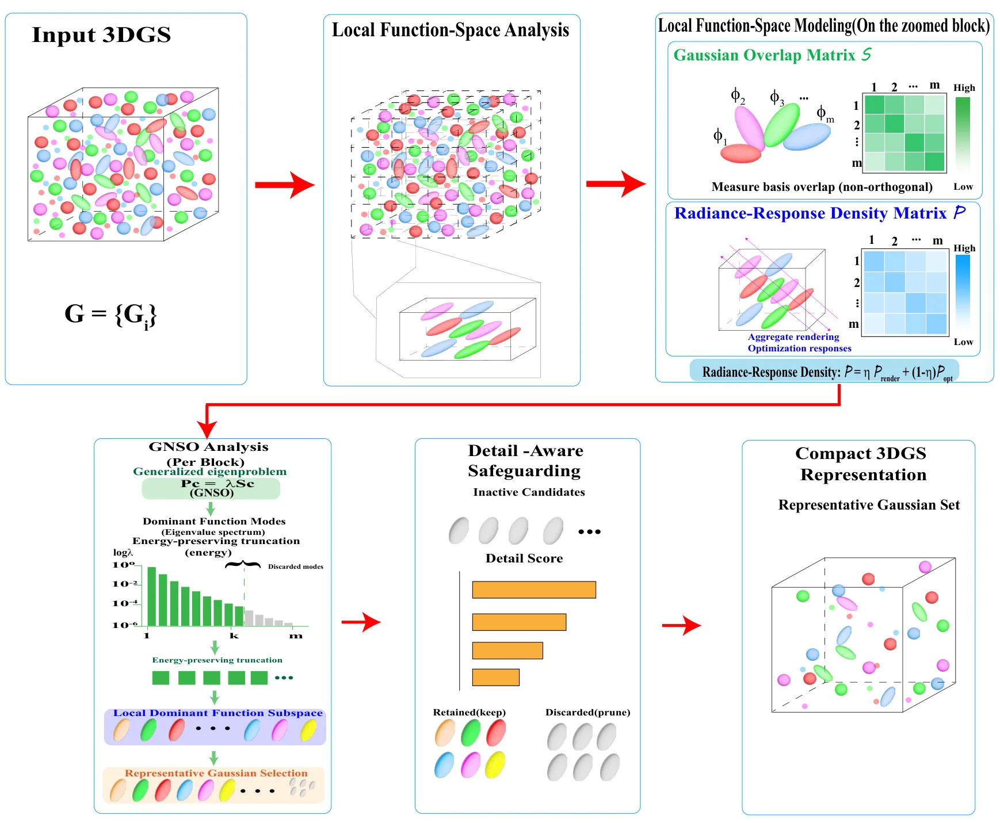
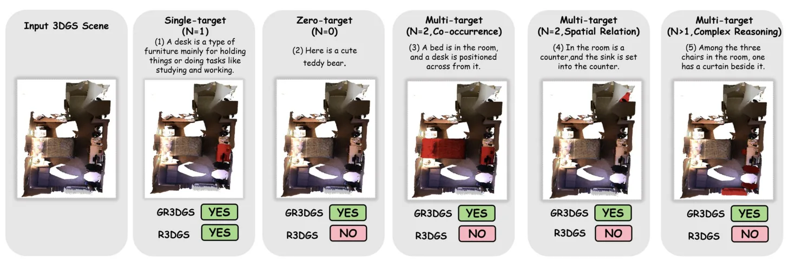
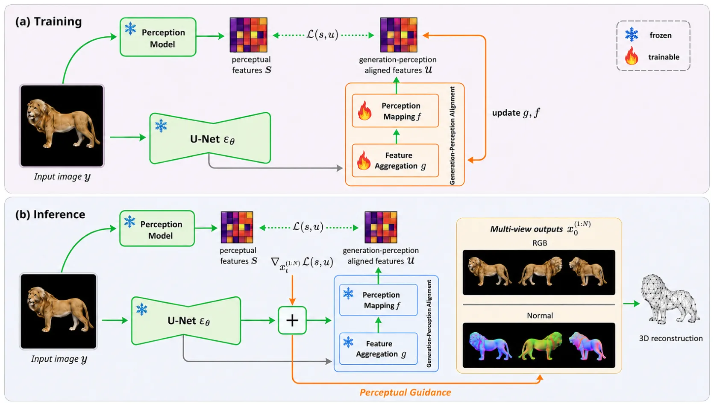
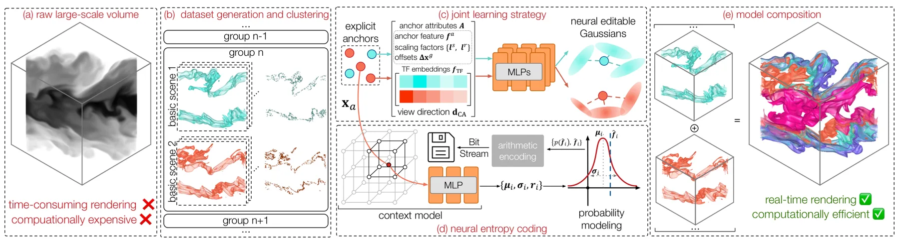
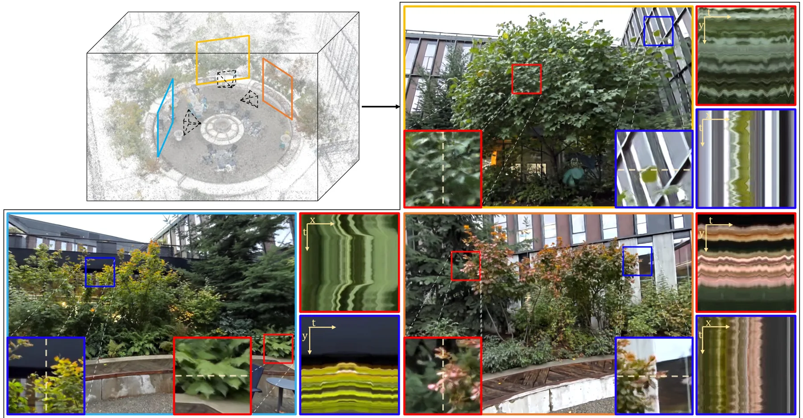

新论文 · 日期 2026-07-19 · score 15 · cs.CV
作者：Hyeonjoong Jang, Dongyoung Choi, Donggun Kim, Woohyun Kang
评分 9.4/10
RGB-D3DGS运动去模糊相机位姿三维重建
一句话工作总结：在 3DGS 中联合优化 RGB-D 位姿、深度几何和曝光内运动，处理低照高速运动导致的 COLMAP/ICP 失效。
本文面向低照度下长曝光造成的极端运动模糊，提出基于 RGB-D 输入的 Gaussian Splatting 三维重建方法。系统先通过 optical flow 与 ICP 对齐连续帧，再通过调整 Gaussian 位置优化深度对齐，从而联合细化相机位姿与三维几何；同时显式建模曝光期间的相机运动，将输入模糊图像与一系列清晰渲染帧比较以完成去模糊。作者在新建 RGB-D 极端运动模糊数据集上报告优于现有方法，并公开代…
We propose a splat-based 3D scene reconstruction method from RGB-D input that effectively handles extreme motion blur, a frequent challenge in low-light environments. Under dim illumination, RGB frames often s…

新论文 · 日期 2026-07-20 · score 11 · cs.CV
作者：Shizeng Jiang, Hao Zhang, Xuerui Ma, Ying Hu
评分 8.9/10
3DGS模型压缩函数空间Gaussian 剪枝实时渲染
一句话工作总结：从重叠 Gaussian 的非正交函数空间冗余出发做子空间选择，实现约 3.54× 压缩和 34.3% 渲染加速。
QIRF 将相邻 Gaussian primitives 视作局部非正交基，通过解析 Gaussian overlap matrix 与 radiance-response density matrix 描述函数冗余和渲染相关性，再以广义特征分解选择主导子空间的代表 Gaussian。RRDM response model 与细节保护机制用于保留高频结构。13 个场景上平均减少 71.7% Gaussian 数量和…
3D Gaussian Splatting (3DGS) achieves high-quality real-time rendering by representing a scene with a large collection of anisotropic Gaussian primitives. However, complex scenes often require millions of Gaus…

新论文 · 日期 2026-07-21 · score 10 · cs.CV
作者：Jiayu Ding, Meilu Song, Xiaoyi Zhang, Hongbo Jin
评分 8.4/10
3DGS语言引导分割多视图几何开放词汇零训练
一句话工作总结：用多视图几何把 2D VLM 先验提升到 3D 点级，实现无需训练和特征存储的 0/1/N 目标语言分割。
本文提出 Generalized Referring 3DGS Segmentation，使查询可对应 0、1 或 N 个目标，并建立 GR-LERF 与 GR-ScanNet benchmark。ZeroSplat 是无需训练、无需附加语义特征的框架，通过稳健多视图几何约束将 2D VLM 先验提升到三维点级，从而避免逐场景语义特征优化和额外存储。实验显示其在广义与单目标场景均优于现有方法并保持较高效率。
Recent advancements in 3D Gaussian Splatting (3DGS) have enabled language-guided scene understanding. However, existing Referring 3D Gaussian Splatting (R3DGS) methods are fundamentally restricted to single-ta…

新论文 · 日期 2026-07-21 · score 9 · cs.CV
作者：Y Huynh, Duc Thanh Nguyen, Mohamed Abdelrazek
评分 7.5/10
单视图重建感知先验三维生成预训练模型对象重建
一句话工作总结：将预训练感知模型的语义和几何信号作为通用条件，插入不同单视图三维重建管线。
本文研究学习式对象感知如何增强单视图三维重建。方法从预训练感知模型提取语义与几何信号，用其驱动单张图像的对象重建；设计与具体生成模型无关，可作为 plug-and-play 模块接入不同重建方法。在 benchmark 上与两套先进单视图重建管线结合均取得一致且显著的提升。
The relationship between object perception and reconstruction is well established in human vision, yet remains underexplored in computer vision. In this paper, we demonstrate that learnt object perception can…

新论文 · 日期 2026-07-19 · score 9 · cs.CV
作者：Xin Liu, Rong Qin, Huipeng Lin, Leizhi Shu
评分 8.8/10
图像点云配准对应剪枝多模态匹配点云密度位姿估计
一句话工作总结：统一跨模态对应坐标并融合多密度点云匹配，缓解图像—点云配准中的密度权衡。
针对图像—点云 detection-free 配准中点云过稀导致 inlier 不足、过密导致 outlier 比例升高的矛盾，本文提出 CCP。方法先把跨坐标粗对应投影至 2D 图像坐标实现空间统一，再由轻量剪枝网络结合坐标几何与模态特征预测 inlier confidence；Multi-Density Point Ensemble 则汇总并去重多种点云密度下的剪枝结果，以提高 inlier recall。多个…
Recent detection-free approaches have shown significant efficacy in image-to-point cloud (I2P) registration by employing a coarse-to-fine matching pipeline. In the coarse stage, down-sampled image features and…

新论文 · 日期 2026-07-21 · score 8 · cs.CV, cs.GR
作者：Kaiyuan Tang, Chaoli Wang
评分 7.3/10
Gaussian Splatting体数据可视化神经压缩熵编码参数共享
一句话工作总结：以 anchor、轻量预测网络和熵编码压缩科学体数据的 Gaussian 表示，并跨相似场景共享参数。
ECoNGS 用轻量网络从显式 anchor 动态预测隐式、可编辑 Gaussian splats，结合隐式表示的紧凑性和显式 primitive 的高性能渲染。其联合学习策略对几何相似场景共享参数，并以 neural entropy model 压缩 anchor 属性。相对 iVR-GS，重建 PSNR 最多提高 2.2 dB，模型最多缩小 6.1 倍，训练最多加速 5.9 倍。
Recent advances in differentiable Gaussian splatting have highlighted the potential of primitive-based approaches as alternative scene representations for interactive, high-quality, volume visualization (VolVi…

新论文 · 日期 2026-07-17 · score 8 · cs.CV
作者：Peilin Tao, Hainan Cui, Mengqi Rong, Shuhan Shen
评分 9.1/10
Structure-from-Motion平移平均Bundle Adjustment特征轨迹全局优化
一句话工作总结：融合相对平移与特征轨迹，以分阶段角度优化和 BA 提升全局 SfM 平移平均的鲁棒性。
HETA++ 联合 relative translations 与 feature tracks 进行全局 SfM 平移平均，以缓解共线相机运动退化和 track outlier。方法先利用全局旋转细化并剔除不一致相对平移，再用 convex distance objective 初始化相机位置和三维点，以 non-bilinear angle objective 细化。随后用空间均衡选择的 tracks 对旋转和…
Global Structure-from-Motion (SfM) offers advantages over incremental methods in terms of efficiency and error distribution. However, the task of translation averaging remains challenging. Many existing method…

新论文 · 日期 2026-07-21 · score 7 · cs.CV
作者：Yihalem Yimolal Tiruneh, Muhammad Salman Ali, Uyoung Jeong, Muneeb A. Khan
评分 7/10
人体重建3DGSSMPL-X遮挡处理单目视频
一句话工作总结：按可见身体区域选择性优化 3D Gaussian Avatar，并以扩散模型补全完全未观测区域。
FlexiAvatar 从单目视频重建可动画 3D 人体，只优化真实可见身体区域，避免未观测肢体损害可见区域质量。方法结合遮挡鲁棒 SMPL-X tracking 与分部 residual refinement 捕获高频几何和外观，并用 diffusion 补全完全不可见区域。在多个全身、半身和头部数据集上，平均 PSNR 约提高 3%；局部可见情形下还减少需要优化和渲染的 Gaussian 数量。
Reconstructing animatable 3D human avatars from monocular video is a fundamental problem in computer vision with broad applications in AR/VR and digital content creation. Existing approaches typically couple p…

新论文 · 日期 2026-07-22 · score 5 · cs.CV
作者：Zhengyu Zou, Hao Li, Kuixuan Jiao, Liu Liu
评分 9/10
流式重建4D 场景理解位姿估计实例跟踪动态场景
一句话工作总结：在视频流中联合增量维护相机运动、场景几何与持久对象身份，面向动态长序列在线 4D 理解。
IGGT4D 面向连续视频流的在线四维场景理解，顺序处理帧并通过 causal spatial-temporal modeling 复用历史上下文，增量更新相机运动、几何和对象身份的统一表示，从而支持动态长场景中的前馈重建与几何—实例一致性。作者还构建 InsScene4D-147K，提供真实/合成、静态/动态场景的 RGB、depth、pose 和时序一致 instance masks。实验覆盖三维重建、位姿估计…
Real-world spatial intelligence requires agents to understand scenes from continuous video streams, where objects move, persist, disappear, and reappear over time. While recent spatial foundation models have e…

新论文 · 日期 2026-07-21 · score 4 · cs.CV
作者：Yen-Chi Cheng, Chen Gao, Chuhan Chen, Tuotuo Li
评分 6.8/10
3DGS场景动画视频扩散形变场新视角合成
一句话工作总结：用时变形变场和视频扩散先验，为大型静态 3DGS 重建添加区域受控的环境微动。
AniGS 为大型复杂 3DGS 重建添加植被等细微分布式动态，同时保持刚性结构不动。系统以 canonical 3DGS 表示场景，用 time-conditioned deformation field 建模运动，并借助预训练视频扩散模型，通过迭代 dataset-model update 与 render-and-refine 扩大视角覆盖；composed video-to-video refinement…
Novel view rendering of large and complex reconstructed scenes is becoming increasingly photorealistic. However, most reconstructions remain static and lack the ambient motion that makes environments immersive…